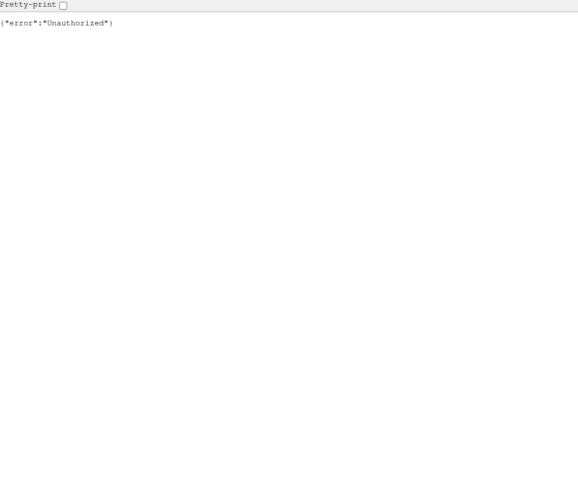
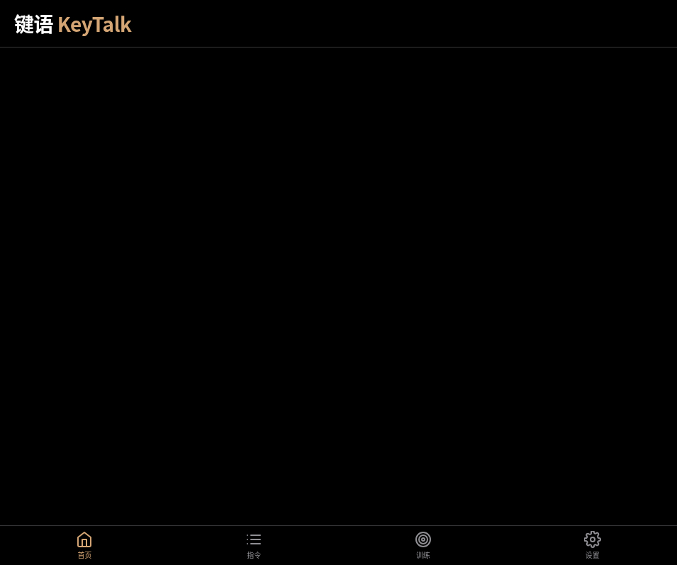

键语 KeyTalk 是一款将手指敲击节奏和指环转动动作转化为数字指令的 iOS Web App。用户无需看屏、无需发声，仅凭手指的物理动作即可完成控制音乐、拒接来电、发送定位等高频微操作。
| 用户层级 | 人群 | 场景 |
|---|---|---|
| P0 核心 | 职场人、学生 | 会议、图书馆、地铁等安静场合 |
| P1 扩展 | 骑行/驾驶者 | 双手不离开车把的安全操作 |
| P2 特殊 | 单手不便的残障人士 | 隐蔽、无障碍的交互需求 |
功能一：敲击识别（5 种节奏模式）
单击、双击、三连击、长短、双长 —— 对应播放/暂停、接听/挂断、拒接+短信、发送定位、快捷指令。
功能二：旋转识别（6 种转动模式）
顺时针/逆时针转动，支持圈数识别（半圈/1圈/2圈）—— 对应切歌、快进快退、暂停。
功能三：实时波形可视化 + 数据统计
Canvas 实时绘制加速度波形，统计今日敲击次数和累计节省时间。



有一次骑共享单车时突然想拒接来电，手忙脚乱差点摔倒。后来发现自己无意识敲桌子的动作其实很有节奏感——为什么不能让这些"无意识的物理敲击"直接承载信息？就像摩斯电码一样，手指敲击是最本能、最静默的人机交互方式。
智能穿戴市场正在从"手腕"向"指尖"迭代。不同于主打健康的智能手表，"键语"主打效率与隐蔽交互，切入的是一个尚未被充分挖掘的细分赛道。敲击+旋转的组合形成了自然的"三维输入空间"，既保留了物理交互的直觉性，又提供了足够的指令丰富度。
由于本 Demo 使用 DeviceMotion API（需要 HTTPS 或 localhost），建议在以下环境体验：
http://localhost:8080/http://<服务器IP>:8080/cd /workspace/keytalk/demo python3 -m http.server 8080
本 Demo 包含以下文件，可直接打包为 ZIP 上传：
demo/
index.html # 主入口
css/style.css # iOS 风格样式
js/
app.js # 主应用逻辑
detector.js # 敲击检测引擎
recognizer.js # 敲击模式识别
rotationDetector.js # 旋转检测引擎（新增）
executor.js # 指令执行层
ui.js # UI 渲染
storage.js # 数据持久化
使用 Brainstorming 技能，通过多轮对话明确 8 项评估维度的设计方向，确定"轻量验证型"方案，产出设计文档。
编写敲击检测引擎（DeviceMotion API + 高通滤波）、模式识别算法（5 种预设模式匹配）、指令执行层（音乐/来电/短信/定位）。
实现 iOS 风格深色主题、4 Tab 导航（首页/指令/训练/设置）、首次启动引导、Toast 反馈、虚拟按钮模拟。
新增旋转检测器（陀螺仪角速度积分 + 方向判断 + 圈数计算），扩展 6 种旋转指令，实现敲击+旋转双维度输入。
使用 TRAE 内置浏览器进行截图验证，修复 emoji 渲染问题（替换为 SVG 图标），确保所有页面正常显示。
截图 1：首页（敲击 + 旋转双输入）
截图 2：指令页（敲击指令 + 旋转指令）
截图 3：训练页（节奏练习）
截图 4：设置页（灵敏度调节 + 数据统计）
以下任务均在 TRAE 中通过多轮对话完成。由于会话续接，Session ID 请从 TRAE 历史记录中复制填入：
| 阶段 | 任务描述 | Session ID（请从 TRAE 历史记录填入） |
|---|---|---|
| 方案设计 | 8 项评估维度方案规划，确定轻量验证型方案 | ________________________________ |
| 核心实现 | 敲击检测引擎 + 5 种模式识别 + iOS 风格 UI | ________________________________ |
| 功能扩展 | 旋转交互 P0+P1 实现（方向 + 圈数识别） | ________________________________ |
| 调试优化 | SVG 图标替换 emoji、波形可视化、灵敏度调节 | ________________________________ |